vídeo do evento
Aftermovie de feiraCobertura de evento

Produtora audiovisual de Cuiabá-MT para eventos, empresas e marcas que querem ser lembradas.

A George Dias Audiovisual nasceu em Cuiabá para registrar o que acontece de mais importante no dia a dia de empresas, eventos e pessoas.
Somos uma equipe de produtores de conteúdo que cuida de tudo: da captação à edição, com entrega rápida e o cuidado de quem conhece o agro, a indústria e as marcas de Mato Grosso. Feiras, convenções, formaturas, lançamentos, filmes de empresa e conteúdo para as redes: cada trabalho é pensado para contar a história certa, do jeito certo.
Fotos, aftermovie, Stories e Reels enquanto o evento acontece.
A história da sua empresa contada a partir de um bom roteiro.
Reels, fotos e vídeos para as redes, pontual ou todo mês.
A equipe e a diretoria com a imagem que a marca merece.
Conte o que você precisa em 2 minutos. A proposta chega bem mais rápido.